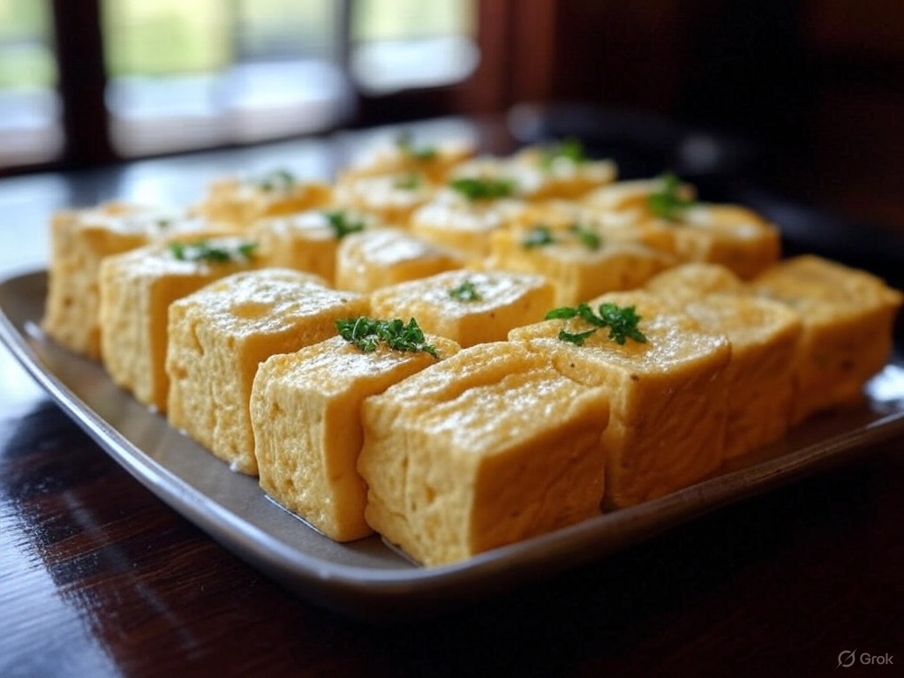

Snowy Fur Katsu Don
Crispy, panko-fried pork or chicken cutlet over rice, drizzled with a light, creamy yuzu sauce resembling white tiger fur.
900 calories
not vegan
not gluten free

Paw Print Taiyaki & Black & White Tiger Mochi Set
Warm fish-shaped pastries filled with white chocolate and red bean, served with vanilla and black sesame mochi
800 calories
not vegan
not gluten free

Shigure’s Cloud Tofu & Striped Tamagoyaki Platter
A light appetizer of fluffy tofu with white miso glaze, paired with tiger-striped Japanese rolled omelet.
500 calories
not vegan
gluten free
White Tiger Yuzu Soda Float
A fizzy yuzu soda with a scoop of vanilla ice cream, creating a tiger-inspired, refreshing drink to end the night.
200 calories
vegan
not gluten free